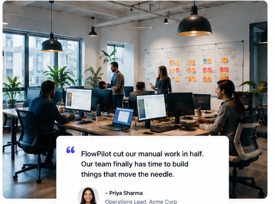

Vendor accessNeeds owner confirmation
AI-assisted operations
Turn busywork into clear next steps.
FlowPilot gives teams one calm place to capture requests, understand what matters, and move work forward with lightweight AI assistance.
No signup required for this interactive preview.
Monday · Operations
Good morning, team.
FP
Suggested next step
Review the 3 requests waiting on context.
FlowPilot grouped them by owner and urgency.
Work queue
Requests to review
Launch checklistContext gathered
Customer handoffReady for review
Interactive preview · nothing is sent anywhere.
01CaptureBring requests into one view.
02UnderstandGive context before action.
03MoveMake the next step obvious.
A better starting point
Less dashboard. More direction.
FlowPilot is designed around the moment teams usually lose time: figuring out what needs attention and who should act next.
01
Context engine
See the why, not just the what.
Requests arrive with a short summary, relevant context, and a suggested next step so people spend less time reconstructing the story.

02
Human in control
AI suggests. People decide.
Every suggested action stays visible and reviewable. The interface makes the handoff between automation and human judgment explicit.
✓
Approve next step
→
03
Lightweight by design
Useful without another maze.
A focused workspace keeps the core loop simple: capture, understand, act. Nothing here depends on a wall of metrics.
How it works
From request to resolution in three calm steps.
01
Bring the request in
Capture a task, question, or operational request without forcing it into a rigid form.
02
Let context catch up
Relevant information is surfaced so the person reviewing the request starts with the full picture.
03
Choose the next move
Review the suggestion, make the call, and move the work forward with a clear owner.
Designed for responsible use
Automation should make decisions easier—not invisible.
✓
Visible suggestions
People can review before acting.
✓
Clear handoffs
Ownership stays explicit.
✓
Honest interface
No invented social proof or inflated claims.
A calmer way to work